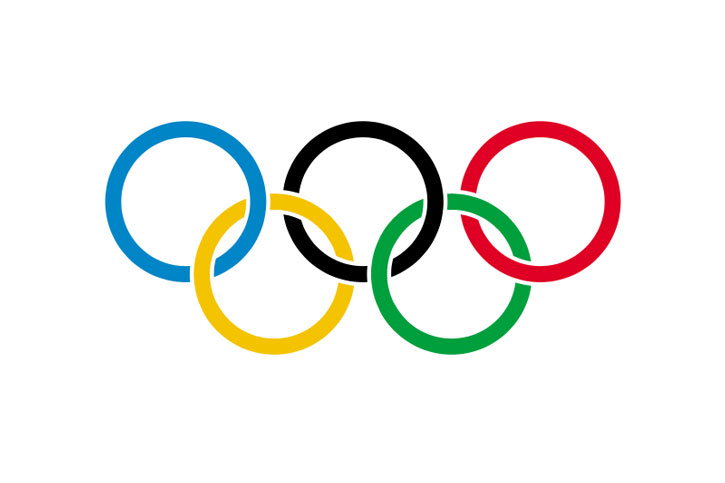

El término deporte es una actividad física, básicamente de carácter competitivo y que mejora la condición física del individuo que lo practica, de igual forma cuenta con una serie de propiedades que lo hacen diferenciarse del juego.

.
El fútbol (del inglés football) es un deporte en el que dos equipos compuestos por once jugadores se enfrentan entre sí. Cada equipo, que dispone de diez jugadores que se mueven por el campo y de un portero (también conocido como arquero o guardameta), tratará de lograr que la pelota (balón) ingrese en el arco (portería) del equipo rival, respetando diversas reglas.
Béisbol es el nombre que recibe un popular deporte que se practica especialmente en países como Estados Unidos, Canadá, México y Venezuela, es decir, con predominio de la zona norte y central del continente americano. Implica dos equipos, cada uno conformado por nueve jugadores, los cuales con dos elementos: bate y pelota, deberán recorrer los puestos y las bases del circuito de juego establecido en un campo acondicionado de manera especial para el desarrollo del mismo.
La natación es el movimiento o desplazamiento a través del agua mediante el uso de las extremidades corporales y sin utilizar ningún instrumento artificial. La natación se trata de un deporte además de recreativo muy beneficioso para el ser humano, ya que al ser principalmente un ejercicio aeróbico, la natación reduce los efectos dañinos del estrés, puede mejorar y corregir la postura y desarrollar un físico característico, a menudo llamada "silueta de nadador".